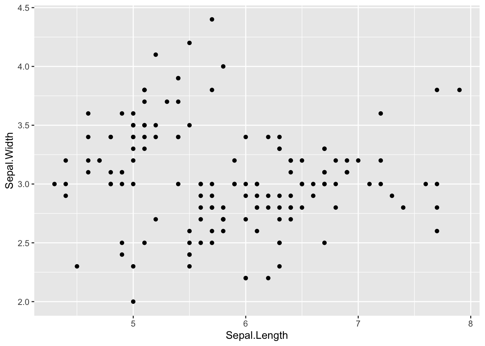

library(reactable)
reactable::reactable(iris)finportaQuatro
This is a Quarto website.
To learn more about Quarto websites visit https://quarto.org/docs/websites.
React Table
GGPlot
library(ggplot2)
ggplot2::ggplot(iris, aes(Sepal.Length, Sepal.Width)) + geom_point()